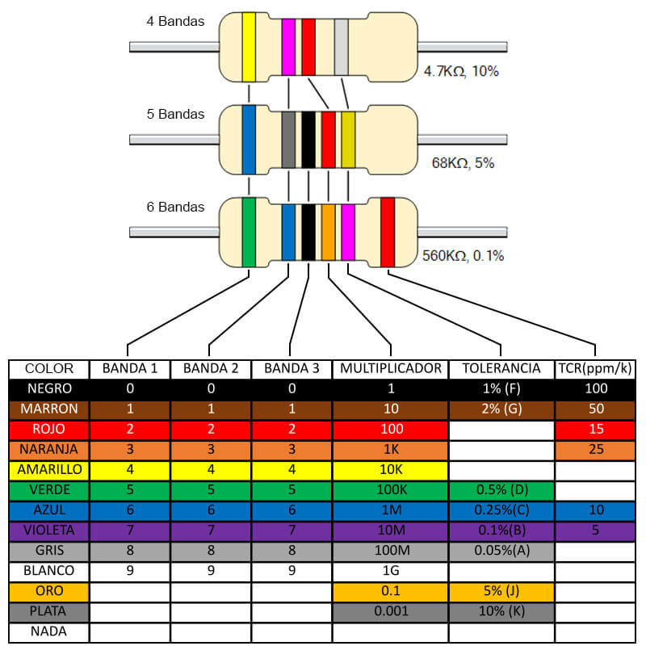

Medición de circuitos resistivos
Repaso de Ley de Ohm, asociaciones serie, paralelo y mixtas, con énfasis en el uso correcto del multímetro.
Fuente DC de 12 V
Multímetro digital
Propósito de la práctica
Objetivo general
Verificar experimentalmente la Ley de Ohm y las leyes de Kirchhoff mediante el montaje y la medición segura de circuitos resistivos alimentados con corriente continua.
Producto observable
Tres circuitos correctamente montados, tablas con valores teóricos y medidos, comprobaciones de corriente y voltaje, y análisis de diferencias.
Voltaje
Medir diferencias de potencial conectando el multímetro en paralelo.
Corriente
Medir circulación de corriente abriendo el circuito e insertando el instrumento en serie.
Resistencia
Medir componentes y equivalentes con el circuito completamente desenergizado.
Al finalizar podrás…
- Interpretar el código de colores de resistencias de cuatro bandas.
- Comprobar el valor de una resistencia con el multímetro.
- Configurar correctamente terminales, función y rango.
- Medir voltaje DC en paralelo.
- Medir corriente DC insertando el instrumento en serie.
- Determinar resistencia equivalente.
- Comprobar la Ley de Ohm.
- Verificar KVL en una malla.
- Verificar KCL en un nodo.
- Calcular error porcentual y explicar diferencias.
Seguridad antes de comenzar
Fuente de alimentación
- Apagar antes de montar o modificar.
- Ajustar 12,00 V sin carga.
- Configurar límite de corriente inicial en 0,12 A.
- Confirmar polaridad positiva y negativa.
- Energizar solo después de la revisión docente.
Multímetro
- Inspeccionar puntas y aislación.
- Punta negra siempre en COM.
- Usar VΩ para voltaje y resistencia.
- Usar entrada A/mA solo para corriente.
- Devolver la punta roja a VΩ al finalizar.
Materiales y potencias mínimas
| Equipo | Cantidad |
|---|---|
| Multímetro digital con fusible operativo | 1 |
| Fuente DC regulable 0–15 V | 1 |
| Protoboard | 1 |
| Cables para protoboard | Según montaje |
| Resistencia | Potencia mínima para esta guía | Cantidad |
|---|---|---|
| 220 Ω | 1 W | 1 |
| 470 Ω | ½ W | 2 |
| 1 kΩ | ¼ W | 1 |
Datos teóricos que usarás
Ley de Ohm
I = V/R
R = V/I
V en voltios, I en amperios y R en ohmios.
Potencia
P = I²·R
P = V²/R
Permite comprobar si la resistencia soporta la energía disipada.
Error porcentual
──────────── ×100 %
|Teórico|
Usa valor absoluto para informar la magnitud de la diferencia.
Código de colores de resistencias

| Color | Dígito | Multiplicador |
|---|---|---|
| Negro | 0 | ×1 |
| Café | 1 | ×10 |
| Rojo | 2 | ×100 |
| Naranjo | 3 | ×1 k |
| Amarillo | 4 | ×10 k |
| Verde | 5 | ×100 k |
| Azul | 6 | ×1 M |
| Violeta | 7 | ×10 M |
| Gris | 8 | ×100 M |
| Blanco | 9 | ×1 G |
Tolerancia habitual: dorado ±5 % · plateado ±10 % · café ±1 % · rojo ±2 %.
Resistencias utilizadas en la práctica
| Valor | Bandas para ±5 % | Intervalo aceptable |
|---|---|---|
| 220 Ω | Rojo · rojo · café · dorado | 209 Ω a 231 Ω |
| 470 Ω | Amarillo · violeta · café · dorado | 446,5 Ω a 493,5 Ω |
| 1 kΩ | Café · negro · rojo · dorado | 950 Ω a 1050 Ω |
Actividad previa
Selecciona los componentes sin usar primero el multímetro. Registra el valor interpretado por colores y después compruébalo midiendo.
Paso 1 · Identificar y medir cada resistencia
Desenergizar
La resistencia debe estar fuera del circuito o con una terminal levantada.
Conectar puntas
Negra en COM; roja en VΩ.
Seleccionar Ω
Usa autorango o un rango superior al valor esperado.
Medir
Toca una terminal con cada punta sin sujetar ambas partes metálicas con los dedos.
| Componente | Colores | Nominal | Medido | Dentro de tolerancia |
|---|---|---|---|---|
| R 220 Ω | 220 Ω | □ Sí □ No | ||
| R 470 Ω N.º 1 | 470 Ω | □ Sí □ No | ||
| R 470 Ω N.º 2 | 470 Ω | □ Sí □ No | ||
| R 1 kΩ | 1 kΩ | □ Sí □ No |
Paso 2 · Elegir terminal, función y rango
| Magnitud | Punta negra | Punta roja | Selector | Conexión | Estado del circuito |
|---|---|---|---|---|---|
| Resistencia | COM | VΩ | Ω | Entre extremos | Apagado y aislado |
| Voltaje DC | COM | VΩ | V⎓ | Paralelo | Energizado |
| Corriente DC | COM | 10 A o mA | A⎓ o mA⎓ | Serie | Apagar para insertar |
Paso 3 · Medir voltaje DC
Preparar
Negra en COM, roja en VΩ y selector en V⎓.
Elegir puntos
Conecta las puntas a los dos nodos entre los que deseas conocer la diferencia de potencial.
Conectar en paralelo
No abras el circuito. Apoya las puntas a ambos lados del componente.
Interpretar
Un signo negativo indica que las puntas están invertidas respecto de la polaridad real.
Paso 4 · Medir corriente DC
Apagar
Desenergiza antes de cambiar conexiones.
Preparar el instrumento
Negra en COM. Roja inicialmente en la entrada de mayor corriente, según el multímetro.
Abrir el circuito
Retira un conductor en el punto donde deseas medir.
Insertar en serie
El multímetro debe cerrar el camino de la corriente.
Energizar y leer
Enciende brevemente, registra, apaga y retira el instrumento.
Antes de medir, evita estos errores
Ω con energía
La tensión externa altera la medición y puede dañar el instrumento.
A en paralelo
Produce una corriente muy alta y normalmente abre el fusible del multímetro.
Terminal incorrecto
Dejar la punta en A y luego intentar medir voltaje es una causa habitual de cortocircuito.
Rango insuficiente
Puede aparecer OL o sobrecarga. Comienza por un rango superior.
Riel interrumpido
Algunas protoboards dividen los rieles de alimentación en la mitad.
Contacto inestable
Puntas flojas o componentes mal insertados producen lecturas variables.
Paso 5 · Reconocer la protoboard
Filas centrales
Normalmente cada grupo de cinco orificios está unido internamente. La ranura central separa ambos lados.
Rieles laterales
Distribuyen +12 V y 0 V, pero pueden estar interrumpidos. Compruébalos en continuidad con la fuente desconectada.
Actividad
- Desconecta la fuente.
- Selecciona continuidad.
- Identifica qué orificios pertenecen al mismo nodo.
- Dibuja el mapa interno de la protoboard.
- Marca los rieles elegidos para +12 V y 0 V.
Procedimiento que se repite en cada circuito
1 · Calcular
Determina Rt, corrientes, voltajes y potencias antes de montar.
2 · Montar
Fuente apagada; organiza nodos y revisa conexiones.
3 · Medir
Rt sin energía; voltajes en paralelo; corrientes en serie.
4 · Comparar
Completa tabla, error porcentual y leyes de Kirchhoff.
Circuito 1 · Asociación en serie

- La corriente es la misma en todos los componentes.
- Las caídas de voltaje suman la tensión de la fuente.
- Una apertura interrumpe todo el circuito.
Circuito 1 · Cálculo teórico corregido
| Magnitud | Cálculo | Resultado |
|---|---|---|
| VR1 | 7,1006 mA × 220 Ω | 1,562 V |
| VR2 | 7,1006 mA × 470 Ω | 3,337 V |
| VR3 | 7,1006 mA × 1000 Ω | 7,101 V |
| Comprobación | 1,562 + 3,337 + 7,101 | 12,000 V |
Circuito 1 · Montaje y medición paso a paso
- Con la fuente apagada, monta R1–R2–R3 en una sola trayectoria.
- Desconecta la fuente y mide Rt entre los extremos del conjunto.
- Configura la fuente en 12,00 V y límite 0,12 A.
- Energiza y mide VR1, VR2 y VR3 en paralelo.
- Apaga, abre el conductor entre +12 V y R1.
- Inserta el multímetro en A⎓, energiza y mide It.
- Apaga y devuelve la punta roja a VΩ.
Circuito 1 · Tabla de resultados
| Magnitud | Teórico nominal | Medido | Error |
|---|---|---|---|
| Rt | 1690 Ω | ||
| It | 7,101 mA | ||
| VR1 | 1,562 V | ||
| VR2 | 3,337 V | ||
| VR3 | 7,101 V | ||
| VR1+VR2+VR3 | 12,000 V |
Circuito 2 · Asociación en paralelo

- El voltaje es el mismo en las tres ramas.
- La corriente total se divide entre las ramas.
- Rt debe ser menor que la resistencia más pequeña.
Circuito 2 · Cálculo teórico corregido
| Rama | Corriente | Potencia |
|---|---|---|
| R1 = 220 Ω | I1 = 12/220 = 54,545 mA | P1 = 12²/220 = 0,655 W |
| R2 = 470 Ω | I2 = 12/470 = 25,532 mA | P2 = 12²/470 = 0,306 W |
| R3 = 1 kΩ | I3 = 12/1000 = 12,000 mA | P3 = 0,144 W |
| Total | It = 92,077 mA | Pt = 1,105 W |
Circuito 2 · Montaje y medición paso a paso
- Con fuente apagada, crea dos nodos comunes.
- Conecta cada resistencia entre esos mismos dos nodos.
- Con la fuente desconectada, mide Rt entre los nodos.
- Energiza y mide el voltaje en cada rama en paralelo.
- Apaga y abre la rama R1; inserta el amperímetro en serie y mide I1.
- Repite por separado con R2 y R3.
- Mide It insertando el amperímetro antes del nodo de división.
- Apaga y devuelve la punta roja a VΩ.
Circuito 2 · Tabla de resultados
| Magnitud | Teórico nominal | Medido | Error |
|---|---|---|---|
| Rt | 130,325 Ω | ||
| V1 | 12,000 V | ||
| V2 | 12,000 V | ||
| V3 | 12,000 V | ||
| I1 | 54,545 mA | ||
| I2 | 25,532 mA | ||
| I3 | 12,000 mA | ||
| It | 92,077 mA |
Circuito 3 · Asociación mixta

- R1 = 220 Ω en serie.
- R2 = 470 Ω en serie.
- R3 = 1 kΩ en paralelo con R4.
- R4 = 470 Ω en paralelo con R3.
Circuito 3 · Cálculo teórico corregido
| Magnitud | Resultado |
|---|---|
| VR1 | 2,615 V |
| VR2 | 5,586 V |
| Voltaje del paralelo R3||R4 | 3,800 V |
| I3 por 1 kΩ | 3,800 mA |
| I4 por 470 Ω | 8,085 mA |
Circuito 3 · Montaje y medición paso a paso
- Monta R1 y R2 en serie desde +12 V.
- Desde la salida de R2 crea el nodo que alimenta R3 y R4.
- Une los extremos inferiores de R3 y R4 al nodo 0 V.
- Fuente desconectada: mide Rt.
- Energiza: mide VR1, VR2 y el voltaje común de R3/R4.
- Mide It antes de R1.
- Apaga; inserta el multímetro sucesivamente en cada rama para medir I3 e I4.
- Comprueba KVL y KCL.
Circuito 3 · Tabla de resultados
| Magnitud | Teórico nominal | Medido | Error |
|---|---|---|---|
| R3||R4 | 319,728 Ω | ||
| Rt | 1009,728 Ω | ||
| It | 11,884 mA | ||
| VR1 | 2,615 V | ||
| VR2 | 5,586 V | ||
| VR3 = VR4 | 3,800 V | ||
| I3 | 3,800 mA | ||
| I4 | 8,085 mA |
Comparar las tres configuraciones
| Propiedad | Serie | Paralelo | Mixto |
|---|---|---|---|
| Resistencia equivalente | 1690 Ω | 130,325 Ω | 1009,728 Ω |
| Corriente total a 12 V | 7,101 mA | 92,077 mA | 11,884 mA |
| Voltaje | Se reparte | Igual en ramas | Se reparte y se iguala en el paralelo |
| Corriente | Igual | Se divide | Igual en serie y se divide en el nodo |
Interpreta
¿Por qué el circuito paralelo consume una corriente total mucho mayor que el circuito serie si ambos utilizan los mismos valores de resistencia y la misma fuente?
Análisis y conclusiones
- ¿Por qué la resistencia equivalente en paralelo es menor que 220 Ω?
- ¿Qué ley se verifica al sumar VR1, VR2 y VR3 en el circuito serie?
- ¿Qué ley se verifica al comparar It con la suma de corrientes de rama?
- ¿Por qué una resistencia real puede diferir de su valor nominal?
- ¿Qué efecto tiene utilizar la tensión real medida de la fuente en los cálculos?
- ¿Qué ocurriría si se usara una resistencia de 220 Ω y ¼ W directamente a 12 V?
- ¿Por qué el amperímetro debe tener una resistencia interna muy baja?
- ¿Por qué el voltímetro se conecta en paralelo y no en serie?
Entregables y evaluación
- Tabla de identificación por colores.
- Valores individuales medidos.
- Cálculos previos de los tres circuitos.
- Fotografías de los montajes.
- Tablas completas de voltaje, corriente y resistencia.
- Comprobaciones KVL y KCL.
- Errores porcentuales.
- Respuestas y conclusión final.
| Criterio | Peso |
|---|---|
| Seguridad y preparación del instrumento | 20 % |
| Identificación y medición de resistencias | 10 % |
| Cálculos teóricos | 20 % |
| Montajes y orden de la protoboard | 15 % |
| Medición correcta con multímetro | 20 % |
| Análisis, error y conclusiones | 15 % |
| Total | 100 % |
Medir correctamente también es comprender
El resultado es confiable solo cuando la función, el rango, los terminales y el tipo de conexión del multímetro son adecuados.
Montar · Medir
Comparar · Explicar
Material base: guía de montaje original. Procedimientos de medición revisados con documentación técnica de resistencia, voltaje DC y corriente en serie.